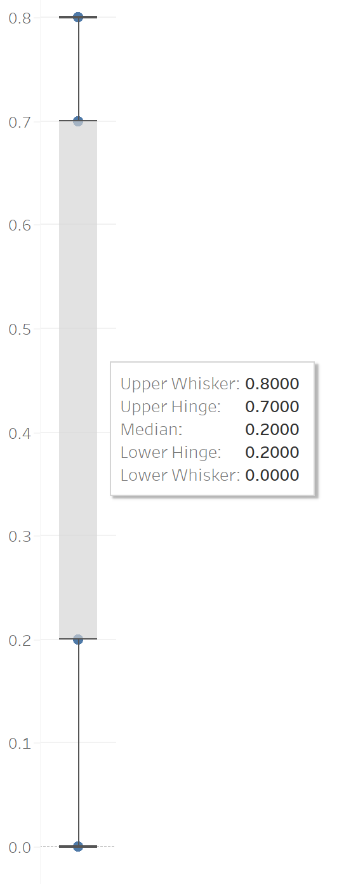

Four practical detection methods, and how to decide what to do once you've found one.
Outliers are extreme values that differ from most of the other values in a dataset. They have a high impact on data analysis — they can give useful insights into a dataset and a better understanding of the analysis, and with outliers we can detect data inconsistencies. They can occur due to a measurement error or a highly skewed distribution. Because they're more variable than the rest of the observations, they may result in wrong conclusions if not handled properly.
It's advisable to remove outliers only when there is a strong reason to do so. Some outliers represent natural variations and should be left as-is in your dataset — these are called true outliers. Others are problematic and should be removed because they represent measurement errors, data entry errors, or processing errors — these have a huge impact on overall results. In a small sample size, a single outlier can have an outsized impact on the results.
We can identify outliers using one of four methods:
This is the simplest way to identify an outlier. Sort the data from low to high and eyeball the extreme low and high values. For a small range of data, you can sort manually; for a larger dataset, Excel works well.
Example:
57, 100, 20, 150, 50, 200, 139, 45, 275, 80, 3
Sorted: 3, 20, 45, 50, 57, 80, 100, 139, 150, 200, 275
Here, 3, 20, and 275 stand out as the outliers.
To sort in Excel: highlight the data you wish to sort, then select Data > Sort & Filter. Choose to sort smallest to largest or largest to smallest — this helps identify the outliers at a glance.
Instead of sorting, you can identify the largest and smallest value directly with the
LARGE and SMALL functions — though each only returns a single
value, so for multiple outliers you'll need to call the function repeatedly:
=SMALL(A2:A11,1) — identifies the 1st smallest value
=SMALL(A2:A11,2) — identifies the 2nd smallest value, and so on. The same
syntax applies to LARGE.
The next most popular method for spotting outliers is visualization — using a scatter plot, box-and-whisker plot, or histogram.
Box and Whisker Plot:
Very helpful for comparing the distribution of different groups in a dataset. It presents ranges of values based on quartiles using boxes and lines, and displays outliers directly. A box plot helps identify five data points: the smallest number (minimum), the first quartile (25% mark), the median, the third quartile (75% mark), and the largest number (maximum).

Histogram:
Histograms group data into bins. Most of the data will be concentrated on one side of the graph, leaving a bin on the other side — helping you spot extreme outliers at a glance.
Scatter Plot:
A scatter plot generally follows a pattern, like a straight line or curve, for a given set of data. Values that don't fall in that pattern and sit outside the cluster are the outliers.
This method identifies outliers by determining how far a value is from the mean. The Z-score tells you how many standard deviations a value is from the mean.
Z-score = (x - mean) / standard deviation
If the Z-score is greater than 3, the value is very far from the mean and can be treated as an outlier — the farther a value is from the mean, the more extreme the outlier. This method works well for normally distributed (or similar) data, but isn't effective for skewed data.
A robust method for skewed data. This method calculates the IQR of the data, then the upper and lower bounds — any data points beyond those bounds are identified as outliers.
How to calculate:
First, sort the data in ascending order, then calculate Q1 (first quartile) and Q3
(third quartile) — Excel's QUARTILE function makes this easy:
=QUARTILE(Datarange, 1) — calculates the first quartile
=QUARTILE(Datarange, 3) — calculates the third quartile
IQR = Q3 - Q1
Upper bound = Q3 + (1.5 × IQR)
Lower bound = Q1 - (1.5 × IQR)
Once you've identified outliers, you need to decide how to handle them. You can choose to remove the data (trimming the outliers), impute it with the mean, median, or mode, or cap/floor the data when values fall beyond the boundary values.
Outliers play a key role in data analysis, so it's important to use efficient detection techniques and handle them once identified — they can skew results and impact insights when not addressed properly. Managing them effectively leads to more meaningful insights and better decision-making.